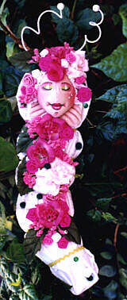
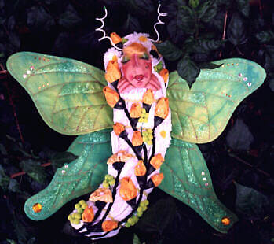

"BabyFace Caterpillars" I have always loved the creatures living in my gardens. Among my favorites are the caterpillars and butterflies that sleep and play among the leaves and flowers. In recent years, they have become my favorite theme in dollmaking, not only because of their beauty, but because their metamorphosis reflects the many changes that have taken place in my own life. This unlimited series of different types of baby caterpillars includes resin and cloth versions in 8-inch and 12-inch sizes and a 4-inch pin doll. I am currently developing patterns and do-it-yourself kits of this sleepy little darling which will be available in early 2000. Currently, the pattern for the 8-inch cloth "BabyFace Caterpillar" is included with the "Hydrangea" pattern. A separate pattern for the Babyface Caterpillars will be available soon.

This very special Caterpillar was made in cloth and decorated with fabric origami roses. The Many Faces of the BabyFace Caterpillars The BabyFace Caterpillars are made in a variety of media. The all-cloth version is handpainted, while the resin-faced version is reproduced from an original sculpt. Initially made in polymer clay, I made a mold using silicone rubber and now pour the faces using a high-quality flesh-colored resin. These faces are then painted and sealed, once the resin has hardened.
|